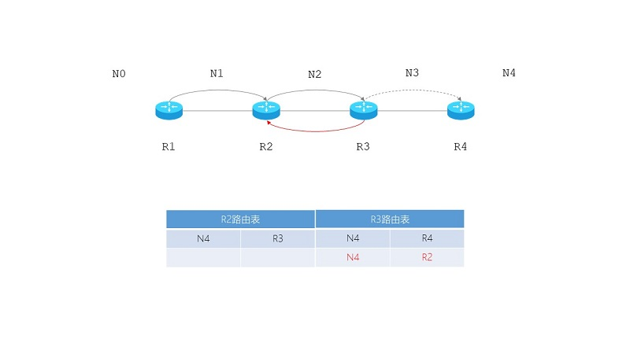

- 基本组成
- 固定部分：首部，20字节；
- 可变部分：数据部分，最大为40字节；
-
IP数据报格式
| 4bit |
4bit |
8bit |
16bit |
| 版本VER |
首部长度THL |
区分服务DSCP |
总长度TL |
| 标识ID |
标志FLAG |
片偏移FRAG OFFSET |
| 生存时间TTL |
协议PRO |
首部校验和CHKSUM |
| 源地址SRC |
| 目标地址DST |
| 数据DATA[长度可变，最大40字节] |
- 版本 VER
- 4个bit；0100，表示IP v4；
- 首部长度 THL
- 4个bit；以4字节为单位；
- 最小值为0101，所以最短首部长度为：5*4=20字节；
- 最大值为1111，所以最大首部长度为：(24-1)*4=15*4=60字节；
- 总长度 TL
- 16bit；以字节位单位；
- 首部和数据部分总和；最大数值为1111 1111 1111 1111，所以最大长度为216-1=65535字节
- 以太网规定：IP数据报的最大传输单元MTU长度为1500字节；长度超过MTU就必须分片，单独封帧再传输
- 标识 ID、标记 FLAGS、片偏移部分 FRAG OFFSET
- 这3个字段用于IP数据报分片；
- 标识 ID：16bit；同一个数据报的不同分片应具有相同的标识；每产生一个数据报[不是数据分片]就加1，充当计算器的功能；
- 标记 FLAG：3bit，包括：MF+DF+保留位0；MF：More Fragment；1：还有分片；0：没有分片；DF：Don’t Fragment；1：不允许分片；0：允许分片；
- 片偏移部分 FRAG OFFSET：13bit，以8字节为单位，指出分片数据报的数据部分在原数据报中的偏移部分；必须为整数；
- 生存时间 TTL
- 8bit，以秒为单位，最大生存时间是255秒；
- 早期为时间；现在为可通过的路由数/跳数；每次转发时就减1；如果为0就丢弃，不转发；
- 防止IP数据报在网络中无限制的兜圈子；
-

TTL的重要性
- 协议 PRO
- 数据部分是何种协议，如ICMP、TCP、UDP、OSPF等
-
常用协议字段
| 协议名称 |
ICMP |
IGMP |
TCP |
UDP |
IPv6 |
OSPF |
| 值 |
1 |
2 |
6 |
17 |
41 |
89 |
- 首部校验和
- 用来校验数据传输过程中，是否出现差错；
- 每经过一个路由器，都要重新计算；为加快转发速度，IPv6中不再计算
- 源地址 SRC、目标地址 DST
- 32bit；
- 数据部分 DATA
- 长度可变，最大40个字节；
- 已经某IP报首部字段THL为0101，总长度字段TL为0000 0011 1111 1100，求数据部分字段DATA的长度。
- [解]
- 首部长度为(0101)2*4 = 5*4 = 20 字节
- 总长度为(0000 0011 1111 1100)2 = 1020 字节
- 故：数据部分长度为：总长度-首部长度 = 1020-20 = 1000 字节
- 已知采用固定长度首部的数据报，数据部分位3800字节，如何分片？（分片不超过1420字节）
- [分析]数据报长度=固定部分+可变部分=首部+数据=20+3800=3820字节；分片后不能超过1420字节，所以每片的数据部分为最大为1400字节；假设标识ID为12345；
-
IP数据报的分片
|
总长度TL |
标识ID |
更多分片MF |
不要分片DF |
FRAG OFFSET |
| 原始数据报 |
20+3800 |
12345 |
0 |
0 |
0 |
| 分片1 |
20+1400 |
1234 |
1 |
0 |
0/8 |
| 分片2 |
20+1400 |
1234 |
1 |
0 |
1400/8 |
| 分片3 |
20+1000 |
1234 |
0 |
0 |
2800/8 |
- 采用固定首部的某IP数据报长度为1500B，目标网络的MTU是800B，求分片数量和偏移。
-
数据报
| 首部20B |
数据部分1480B，编号为0-1479 |
-
改进方案
| 分片1 |
片偏移 |
分片2 |
片偏移 |
| 20B |
780B：0-779 |
0/8=0 |
20B |
700B：780-1479 |
780/8=97.5 |
| 偏移量不是整数；分片方案失败； |
- 改进方案：调整分片长度为8给整倍数，即：[780/8]*8=776B
-
最终方案
| 分片1 |
片偏移 |
分片2 |
片偏移 |
| 20B |
776B：0-775 |
0/8=0 |
20B |
704B：776-1479 |
776/8=97 |